persistence
来自 DeepSeek
你的学习思路非常清晰，结合历史演进和实践驱动的学习方式能深入理解技术本质。以下是针对操作系统持久化部分的学习建议、实践项目推荐和资料清单：
一、学习路径建议（按技术演进顺序）
1. 存储介质与基础I/O（1940s-1960s）
- 核心问题：如何将数据可靠地存储在物理设备上？如何高效读写？
- 技术演进：
- 纸带/磁鼓 → 硬盘（机械磁盘） → SSD（现代）
- 直接访问存储（通过端口指令读写）→ 中断驱动I/O（CPU解放）→ DMA（直接内存访问，进一步解放CPU）
- 关键实验：模拟一个虚拟磁盘设备，通过端口指令读写数据块（类似xv6的
virtio驱动）。 - 遗留问题：直接操作硬件复杂、易出错，需要抽象接口。
2. 设备驱动与文件抽象（1970s）
- 核心问题：如何统一管理不同硬件设备？如何抽象存储空间？
- 技术演进：
- 设备驱动程序（隔离硬件差异）→ 文件抽象（UNIX的“一切皆文件”）
- 字符设备（如键盘） vs 块设备（如磁盘）
- 关键实验：实现一个字符设备驱动（如虚拟终端），或块设备驱动的简单调度算法（如电梯算法）。
3. 文件系统（1980s-1990s）
- 核心问题：如何组织磁盘上的数据？如何高效管理文件？
- 技术演进：
- FAT文件系统（链表式分配，简单但易碎片化） → ext2（索引节点+块组，减少碎片） → 日志文件系统（ext3, NTFS，保证一致性）
- 关键实验：实现一个简化版FAT或ext2文件系统，支持创建/删除文件、目录遍历。
4. 可靠性保障（1990s-2000s）
- 核心问题：如何防止数据丢失？如何应对硬件故障？
- 技术演进：
- RAID（冗余磁盘阵列）→ 日志（Journaling） → 写时复制（COW）（如ZFS）
- 关键实验：模拟RAID 0/1/5的数据分布和恢复逻辑，或实现一个日志追加（append-only journal）机制。
5. 现代扩展（2000s-至今）
- 核心问题：如何应对海量数据？如何优化性能？
- 技术演进：
- 闪存友好文件系统（F2FS）→ 分布式文件系统（HDFS）→ 新型存储硬件（NVMe, 持久内存）
- 关键实验：分析SSD的磨损均衡策略，或实现一个简单的LSM-Tree（Log-Structured Merge Tree）。
二、实践项目推荐
1. 入门级（适合理解基础原理）
- xv6文件系统实验（MIT 6.S081课程）
- 实现文件系统的核心功能：inode管理、目录结构、文件读写。
- 代码量小（约500行），适合入门。
-
FUSE（用户态文件系统）
- 用FUSE库实现一个内存文件系统（如simplefs）。
- 学习文件系统API（
open,read,write）和VFS抽象。
2. 进阶级（贴近现代系统）
- 实现日志文件系统
- 在ext2基础上添加日志功能（参考ext3设计）。
-
关键点：事务提交、日志回放（replay）、崩溃恢复。
-
RAID模拟器
- 用Python/C模拟RAID 5的条带化（striping）和奇偶校验恢复。
-
示例项目：SoftRAID Simulator
-
持久化键值存储
- 基于LSM-Tree或B-Tree实现一个简单的数据库引擎（参考Bitcask）。
- 结合文件系统与并发控制（如WAL日志）。
3. 挑战级（综合项目）
- 迷你版ZFS
- 实现写时复制（Copy-on-Write）、动态块大小、快照功能。
-
用户态NVMe驱动
- 通过SPDK（Storage Performance Development Kit）直接操作NVMe设备。
- 学习轮询模式（Polling）与中断的取舍。
三、学习资料推荐
书籍
- 《Operating Systems: Three Easy Pieces》（OSTEP）
- 持久化章节免费在线版
- 《Modern Operating Systems》（Tanenbaum）
- 第5章“Input/Output”和第6章“File Systems”
- 《文件系统设计》（File System Design, 作者Marshall Kirk McKusick）
在线资源
- 蒋炎岩课程资料
- 南京大学操作系统课程主页
- Linux内核文档
- Block Layer Documentation
- 技术博客与论文
- ext4文件系统设计
- ZFS On-Disk Specification
- FAST会议论文集（存储领域顶级会议）
四、学习工具链
- 调试工具：
strace（跟踪系统调用）、blktrace（分析块设备I/O） - 模拟环境：QEMU（虚拟化磁盘设备）、FUSE（用户态文件系统）
- 性能分析：
iostat、fio（存储基准测试）
五、学习建议
- 从简单到复杂：先实现一个只有“创建/读写”功能的文件系统，再逐步添加日志、并发支持。
- 结合代码与论文：例如实现ext2时，参考ext2论文。
- 参与开源项目：如Linux内核的
drivers/block或fs/ext4模块（需有一定基础）。
通过以上路径，你不仅能理解技术演进的内在逻辑，还能通过动手实现掌握现代系统的核心机制。
存储设备原理
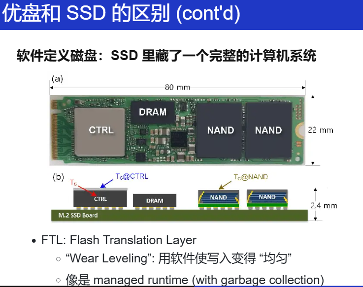
其实和内存管理就是一样的，就是 VR 眼镜！
存储介质的抽象，最终都是一个 字节数组！
-
Logical block address (LBA) → Physical block address (PBA)
-
Read/write amplification (读/写不必要多的内容)
- Copy on write
- “VR 眼镜” 本身也需要更新
推荐阅读
block（擦除的最小单位）
page（读写的最小单位）
都是编好号的。
第一次写，写到第100个块，但下一次就写到第101个块里 → 均匀分布地写
输入输出设备原理
I/O 设备
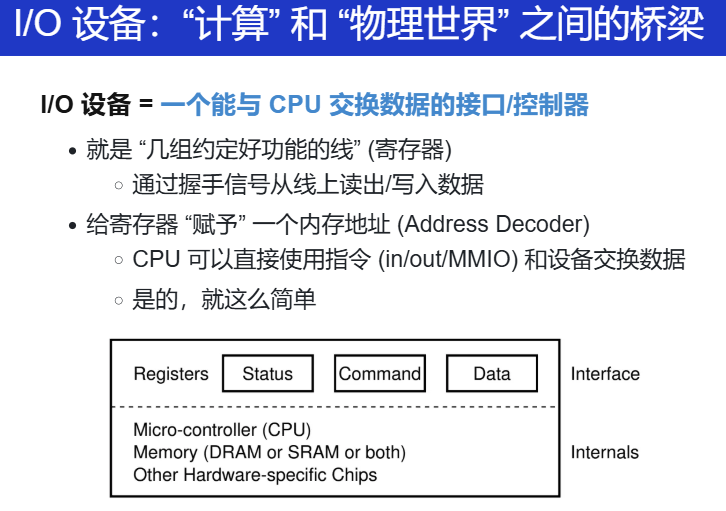
原则上只有一根线，就可以实现计算机和物理世界的交互。
那什么是 I/O 设备
理论基本模型就是 register（status、command、data...）
键盘按下，想想嵌入式里做的。
把每一个设备的寄存器都想办法连到 地址空间里，那只要为每一个寄存器发呢皮地址。
Example1：UART
"COM1"(communication 1)。（想起自己在 PA 中的实现了吗？！）
#define COM1 0x3f8
static int uart_init() {
outb(COM1 + 2, 0); // 控制器相关细节
outb(COM1 + 3, 0x80);
outb(COM1 + 0, 115200 / 9600);
...
}
static void uart_tx(AM_UART_TX_T *send) {
outb(COM1, send->data);
}
// 理解为 指针指向某个地址0x3f8，然后往这里写
//读也是类似，读取缓冲区
static void uart_rx(AM_UART_RX_T *recv) {
recv->data = (inb(COM1 + 5) & 0x1) ? inb(COM1) : -1;
}
理论上。
将寄存器和CPU连起来，那我们的终端，能做很多了！
在接口上连接一个屏幕、键盘，那就能用电路实现一个teletypewriter/tty。
明白为什么会有escape？
字符流，在不概念
移植 nommu-Linux的时候的内容：
进一步，关于 bootconsole、console 的区别？
再进一步 TTY、 /dev/tty、/dev/ttyS0、/dev/console、uart等差异？
韦东山老师的视频区别！！！讲的真的很好！！
Linux Serial Console — The Linux Kernel documentation
再补充：深入解析Linux内核Console框架及虚拟UART控制台的实现-CSDN博客
还有一个回答也挺好的：
c - Difference between a serial driver and a tty driver - Stack Overflow
Example2：键盘控制器
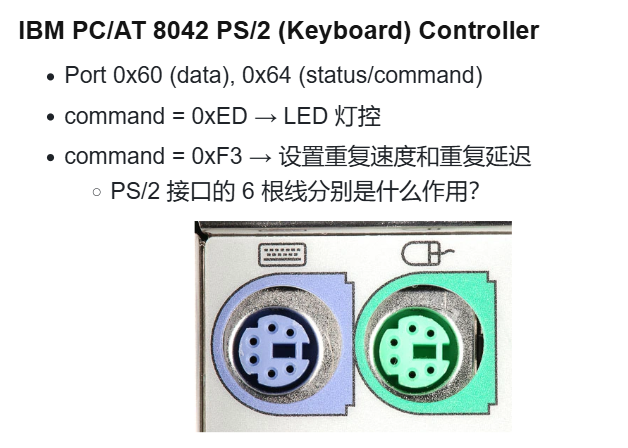
还是寄存器！比如从 status 中读出缓冲区中是否有按键，如果有，那就去读data，读出扫描码！在PA中的内容！
按下速度？什么速度往缓冲区里写？都可以探索！
3### Example3：磁盘控制器
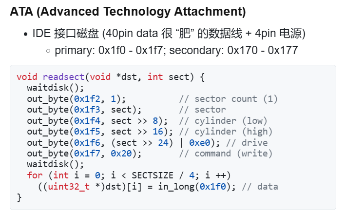
怎么将磁盘接入到 CPU ？
还是要靠寄存器。
看 status 寄存器的状态，看看磁盘是否准备好了。再从data寄存器读。
今天的内容，但无论如何，设备都是用处理器能理解的接口！
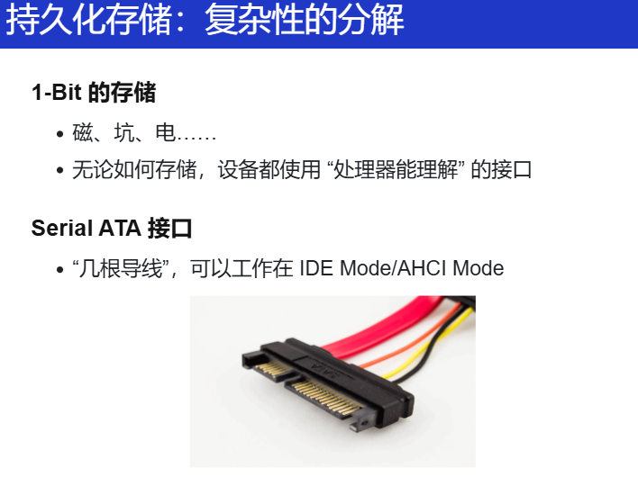
Example4：打印机
想想，这个玩意怎么实现？
激光、墨水的打印机原理？
写作业机？
那个时候的？有一个笔，控制笔左/右、上下移动的机器，给定坐标，那就能画出很多东西！
但是怎么将它和 CPU 连起来？（之前用的寄存器可以吗？可以！）
一个打印机的解释器：
move(x, y);
down；
move(....);
还有，为什么不把一个小的 CPU 放到打印机里？
再搞一个独属于打印机编程语言，将这个语言送到 打印机里，打印机自动“编译”成上面的“低级机器”指令。
自己在上金工实习的时候，遇到数控车床！！
老师的例子：postscript 借助 ps2pdf
字体、字号、位置......
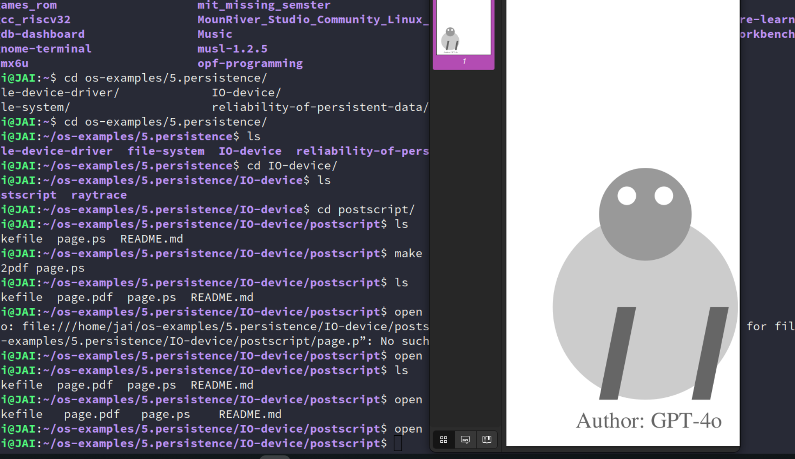
再进一步，是不是还能做排版！！
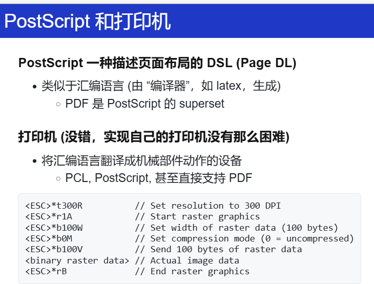
将汇编语言翻译成机械部件动作的设备
再接着：
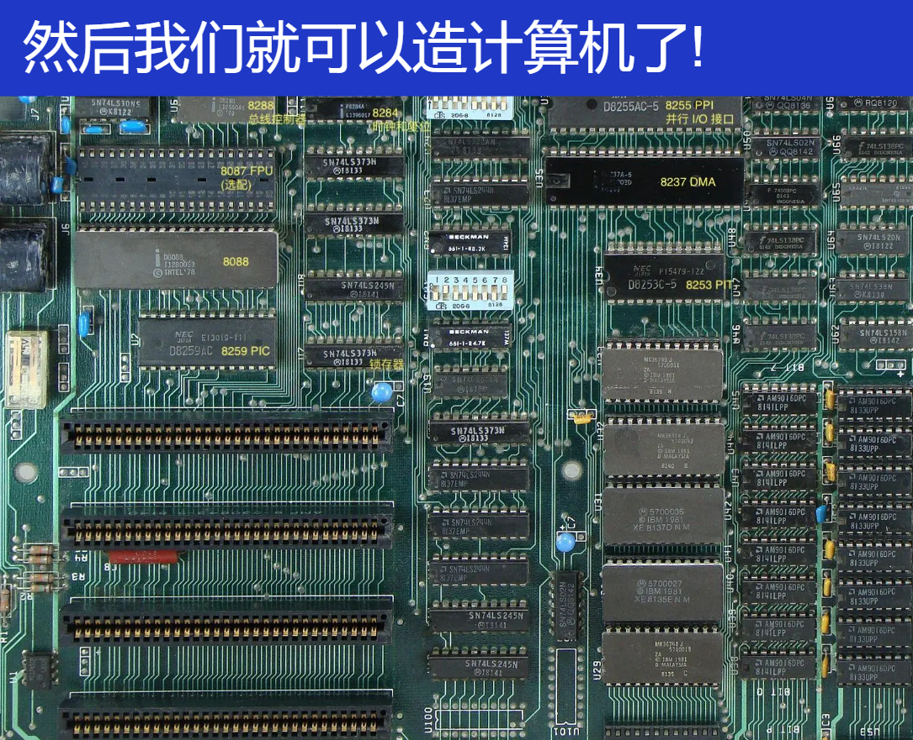
今天的主板，也没有多大的区别！
就像上面那样的设备，我们在 PA 中做的就差不多是这样，但这是为了我们方便理解原理，能 quick and dirty 地做起来，
但是，仅仅有上面的内容，离今天的高性能设备还是有点远的！但别急，继续一步步来。
接着往下看！
总线、中断控制器和 DMA
总线
最为重要的是 总线。
你总不想每个计算机系统只有固定的设备吧？我想接入更多 (甚至未知) 的 I/O 设备，要是有一天出了新型产品硬件，那只要有这个，就能极大地减少成本呀！复用率高！
所以，这么一个特殊的 I/O 设备：总线bus
每当有一个请求给总线，总线会根据这个请求（属于 DDR，属于键盘，属于别的设备），转发给别的设备！
但总线也有设备，CPU 通过和总线的寄存器交互，从而知道总线挂了哪些设备，设备中有几个寄存器，产商是谁......

所有外部设备都直接或间接地连接到 PCIe 总线上，插上之后，总线给它分配地址。
就像，你装计算机的时候，把 显卡插入主板的时候。
另外，PCIe 总线会连一个桥到 USB 总线。设备一层层一级级的，连接虚拟化各层设备。不过，看着简单，但实际很复杂！没做好就容易翻车！（win98的名场面）
举个例子，关于 Plug and Play（热插拔）：
总线不仅是物理连接通道，更是资源协调者。以PCIe总线热插拔USB设备为例：
- 枚举与发现：插入USB设备后，PCIe总线通过电气信号变化检测设备存在，触发枚举过程。总线控制器读取设备的Vendor ID和Device ID，确定其类型（如存储设备、网卡）。
- 地址分配：总线动态分配内存映射I/O（MMIO）地址和I/O端口，确保不与现有设备冲突。例如，USB控制器可能被分配到
0xFE200000的MMIO区域。- 层级扩展：若设备连接在USB 3.0集线器下，需通过PCIe→USB主控桥→USB Hub的多级拓扑传递请求，每一级总线（PCIe、USB）需遵循不同协议，地址转换和时序控制复杂度剧增。
复杂点：
- 即插即用（PnP）要求总线实时管理拓扑变化，而不同总线（如PCIe、USB、SATA）的协议差异导致资源分配算法需高度适配。
- 电气兼容性：例如，USB 3.0的SuperSpeed模式需差分信号对，插入劣质线缆可能导致信号衰减，总线需降速至USB 2.0模式，涉及物理层与协议层的动态协商。
当然，还会有后面内容的影响，待会补充
当然，重要的是，在我们装机的时候，能够想到总线这个概念就好啦！
中断
有了总线，I/O 的问题就解决了，但 I/O 也有问题。
因为 CPU 也不知道 I/O 是否准备好！
比如说，键盘键入，键码会放到 data register 中，但 CPU不知道，这个时候就会有中断的内容：中断线

来了中断，OS 跳转到特定的位置去执行，然后扫描哪个设备有中断，对于不同的设备，应该要怎么处理。
但是，还有问题，要是存在并发的设别中断呢？上面这一根线处理的是一个中断，怎么办？用一个控制/仲裁器吧！
收集各个设备中断，并选择一个发送给 CPU，并且完成对设备的应答
例子：
-
Intel 8259 PIC
- programmable interrupt controller
- 可以设置中断屏蔽、中断触发等……
-
APIC (Advanced PIC)
-
local APIC: 中断向量表, IPI, 时钟, ……
每个 CPU 都有本地的 APIC。
有意思的是这个 IPI ，处理器间的中断，用于启动多核 CPU。L1 的笔记内容喔！
其中一个作为活动的，该 CPU 执行启动的流程，扫描系统里其他的 CPU，做好所有的初始化和准备工作，加载好其他 CPU 要运行的代码，然后给其他的 CPU 发一个 IPI，那多处理器就这么启来了。
还有一个有意思的：IPI 还用于解决 TLB 的
shoot down：换页、共享内存的
unmap。更多 Wikipedia。
-
I/O APIC: 其他 I/O 设备
看看框架代码！
-
DMA
一个例子：操作系统：写入 1 GB 的数据到磁盘
- 即便磁盘已经准备好，依然需要非常浪费时间的循环
- out 指令写入的是设备缓冲区，需要去总线上绕一圈
- cache disable; store 其实很慢的
for (int i = 0; i < 1 GB / 4; i++) {
outl(PORT, ((u32 *)buf)[i]);
}
如果是多处理器系统？那就把 write_disk 线程扔到另一个 CPU 吧？
但是加一个通用处理器太浪费，不如加一个简单的
- DMA: 只能执行 memcpy(ATA0, buf, length); 的处理器
- 支持的几种类型的 memcpy
- memory → memory
- memory → device (register)
- device (register) → memory
- 实际实现：直接把 DMA 控制器连接在总线和内存上
- Intel 8237A
今天：PCI 总线支持 DMA
sudo cat /proc/iomem
这个时候，我们已经造出了一个非常了不起的 计算机 了！
GPU 和 加速
构建了一个计算机系统，但是距离现代的 高性能 CPU 还是有距离。
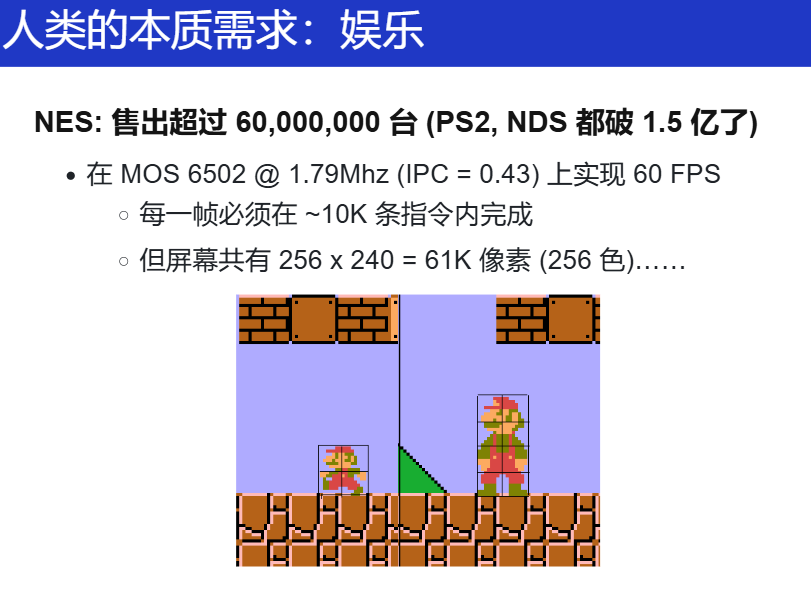
CPU 在你要的场景中做得不够好，那就加一个 "CPU"，或者说另类的 CPU，只做一件简单的你要做的事情！比如：
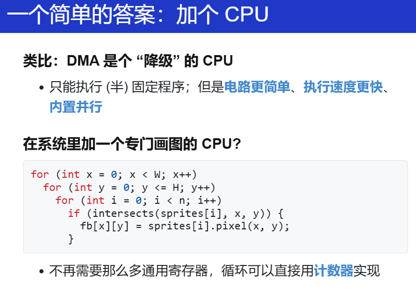
VRAM 中存了好多个我要画的小贴块，直接算，这样就不用那么多通用寄存器。
而且，加一个处理器，就不用那么多的指令啦
“极限的素材复用”：
蘑菇的左右移动（左右腿的长度不一样！）
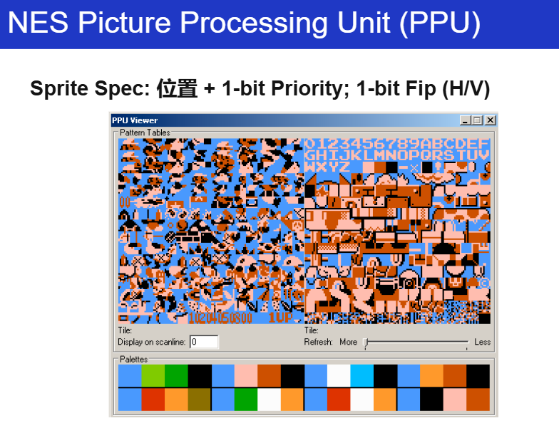
有了这些内容，凭着兴趣和想象，有能力敢去做！
另外，观察一下：
DMA：一重循环
PPU：多重循环
那 gpt.c 也是这样的呀！
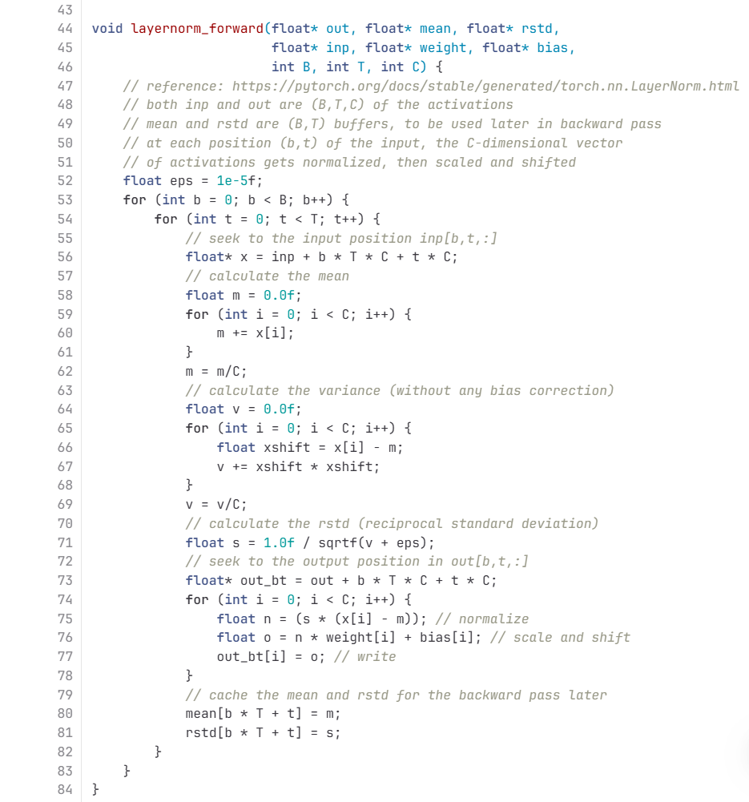
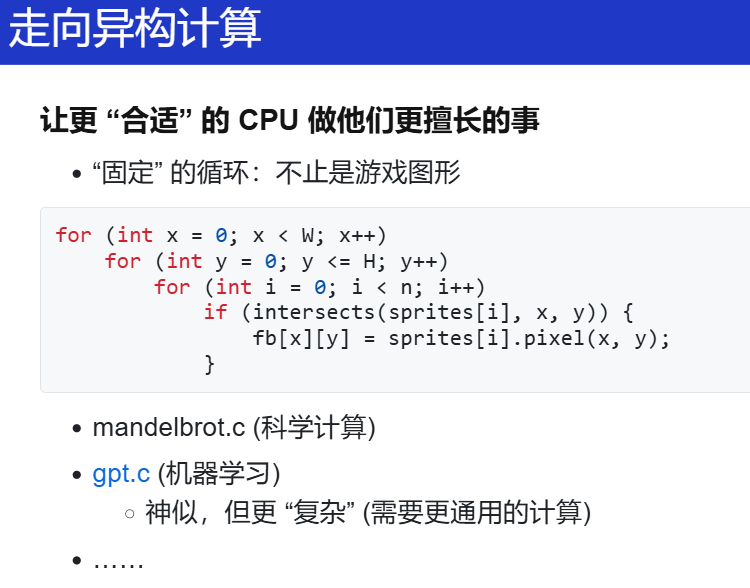
那现代的 GPU？
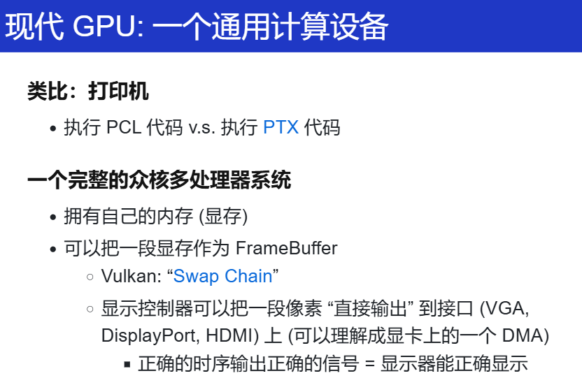
文件与设备驱动程序
文件
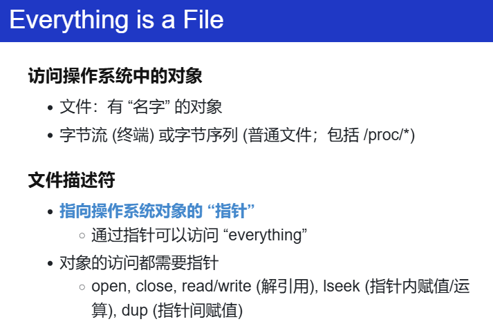
核心思想：操作系统中都是文件，而文件都是有名字的对象，要访问这个对象，那就需要指向这个（OS）对象的指针，那就是文件描述符（file descriptor）。
但是， OS 中的文件也不全都是字节序列：
/dev/null、终端好像也不是一个文件？
但都是要通过文件描述符来访问这个对象，用对象来理解文件描述符更好。
当然，fd 也有别名：handle 把柄，有了这个把柄，我就能控制（访问）你了！
想想，C里面的 各种的 fopen 等等，是不是都要用到这个 fd？用来指定某一个对象（流、文件夹的那个文件......）
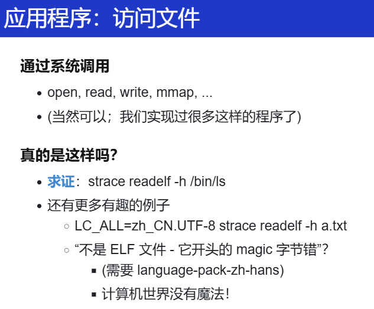
OS 课上几乎算是最重要的工具：strace
用来看用户程序究竟是不是通过 fd 来访问的：strace readelf -h /bin/ls
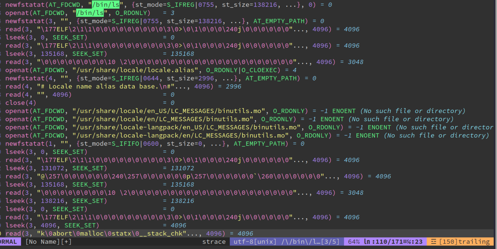
返回 3：预期之中。0：stdin、1：stdout、2：stderr
fstat、lseek、更多内容。
还开了一些别的文件：
openat(AT_FDCWD, "/usr/share/locale/locale.alias", O_RDONLY|O_CLOEXEC) = 4
OS 怎么知道我们是处于中文还是英文环境？就是 open 等各种文件，不断地找找找，找不到，那就用默认的咯。
想验证怎么办？LC_ALL=zh_CN.UTF-8
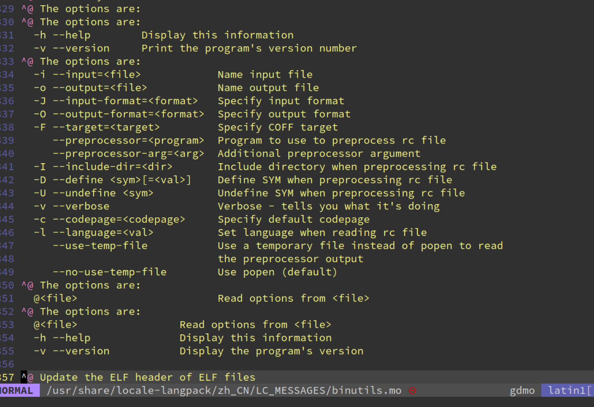
ELF文件里竟然还有这个！
我们都知道有open，用文件描述符，通过 open，我们就访问文件了，这东西都知道。
但是在看了一些 strace 分析后的内容，多花点时间关于我们的应用程序是怎么使用文件的，底层怎么做到的，那应该有更深刻的理解。
比如改语言，更改一个 选项，不是要去设置里去点，才能有用，但是它的底层做的，就是这样：export LC_ALL=zh_CN.UTF-8
真的就是 计算机世界里没有魔法。
上面这个玩意，甚至还能当成面试题，Linux系统里语言看到的是英文，有时候看到的是中文的，想想看怎么做的？
再次理解
everything is file！就算我不知道上面的答案，但有了一定了解之后，通过一些办法总能找到！
更多细节（1）
这些细节，我觉得真的是没必要记住！就算我不知道，但我有办法验证！
文件是 “虚拟磁盘”
- 把磁盘的一部分映射到地址空间，再自然不过了
mmap(addr, length, prot, flags, fd, offset);
一些细节问题
- 映射的长度超过文件大小会发生什么？
- ATFAI? GPT-4o 答错了，但给了一个正确的示例代码
- 启发：langchain (self-validation) 是趋势
- RTFM 看来还是有用的 (“Errors”): SIGBUS
ftruncate可以改变文件大小
- ATFAI? GPT-4o 答错了，但给了一个正确的示例代码
其实，我们的一开始反应就是不知道，但是对于
更多细节（2）
-
文件访问的 offset
文件的读写自带 “游标”
- 省去了进程保存文件读/写的位置
-
Offset 管理
- read/write: 会自动维护 offset
- lseek: 修改 offset 位置
- 对比：mmap file，实现 append 是个噩梦
更多细节（3）
-
mmap, lseek, ftruncate互相交互的情况假设初始时文件大小为 2MB
lseekto 3 MiB (SEEK_SET)- 这时候能写入吗？
ftruncateto 1 MiB- 这时候 offset 在哪里？
问问 LLM？
水面下的冰山：当多个机制互相作用时，系统就变得复杂
工作的时候，真的就会需要探索这些细节。
更多细节（4）
-
文件描述符在 fork 时会被子进程继承
- 父子进程共用 offset？
- 父子进程拥有独立 offset？
-
请你做一次操作系统的设计者
- 哪一种方案更合理？
父子进程同时写一个log，出现覆写，需要机制同步offset，那多个进程之间完成同步，人肯定是做不好的。
里面的细节：
再探索下：
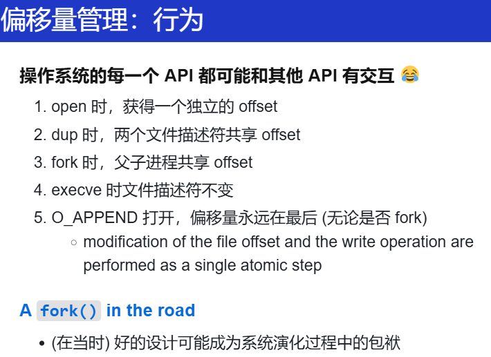
对于 offset，不同的 API 选择了不同的方式。
另外：A fork() in the road | Proceedings of the Workshop on Hot Topics in Operating Systems
文件的实现
文件描述符可以访问 “一切”
- 操作系统内核是如何实现的？
- 如你所料：一个 switch-case
if(f->type == FD_PIPE){
r = piperead(f->pipe, addr, n);
} else if(f->type == FD_DEVICE){
if(f->major < 0 || f->major >= NDEV || !devsw[f->major].read)
return -1;
r = devsw[f->major].read(1, addr, n);
} else if(f->type == FD_INODE){
ilock(f->ip);
if((r = readi(f->ip, 1, addr, f->off, n)) > 0)
f->off += r;
iunlock(f->ip);
} else {
panic("fileread");
}
面向对象的设备驱动程序。
只要能够支持以下操作（的部分），那就是文件（有些不能不能读，不能写）。
struct file_operations {
struct module *owner;
loff_t (*llseek) (struct file *, loff_t, int);
ssize_t (*read) (struct file *, char __user *, size_t, loff_t *);
ssize_t (*write) (struct file *, const char __user *, size_t, loff_t *);
ssize_t (*read_iter) (struct kiocb *, struct iov_iter *);
ssize_t (*write_iter) (struct kiocb *, struct iov_iter *);
int (*iopoll)(struct kiocb *kiocb, struct io_comp_batch *, uint flags);
int (*iterate_shared) (struct file *, struct dir_context *);
__poll_t (*poll) (struct file *, struct poll_table_struct *);
long (*unlocked_ioctl) (struct file *, uint, ul);
long (*compat_ioctl) (struct file *, uint, ul);
int (*mmap) (struct file *, struct vm_area_struct *);
ul mmap_supported_flags;
int (*open) (struct inode *, struct file *);
int (*flush) (struct file *, fl_owner_t id);
int (*release) (struct inode *, struct file *);
int (*fsync) (struct file *, loff_t, loff_t, int datasync);
int (*fasync) (int, struct file *, int);
int (*lock) (struct file *, int, struct file_lock *);
ul (*get_unmapped_area)(struct file *, ul, ul, ul, ul);
int (*check_flags)(int);
int (*flock) (struct file *, int, struct file_lock *);
ssize_t (*splice_write)(struct pipe_inode_info *, struct file *, loff_t *, size_t, uint);
ssize_t (*splice_read)(struct file *, loff_t *, struct pipe_inode_info *, size_t, uint);
void (*splice_eof)(struct file *file);
int (*setlease)(struct file *, int, struct file_lease **, void **);
long (*fallocate)(struct file *file, int mode, loff_t offset, loff_t len);
void (*show_fdinfo)(struct seq_file *m, struct file *f);
ssize_t (*copy_file_range)(struct file *, loff_t, struct file *, loff_t, size_t, uint);
loff_t (*remap_file_range)(struct file *file_in, loff_t pos_in, struct file *file_out,
loff_t pos_out, loff_t len, uint remap_flags);
int (*fadvise)(struct file *, loff_t, loff_t, int);
int (*uring_cmd)(struct io_uring_cmd *ioucmd, uint issue_flags);
int (*uring_cmd_iopoll)(struct io_uring_cmd *, struct io_comp_batch *,
uint poll_flags);
} __randomize_layout;
写驱动就是在写这些是吗？
设备驱动程序
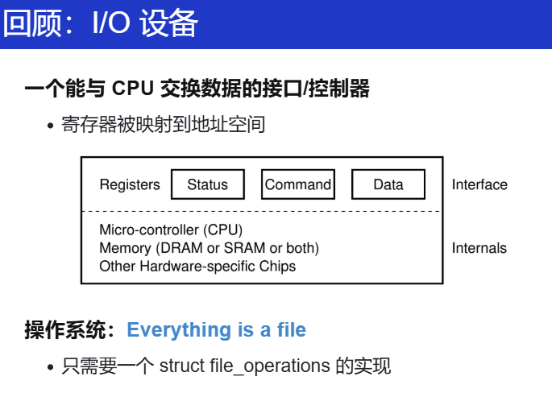
dev/null 的read、null
核心：ioctl